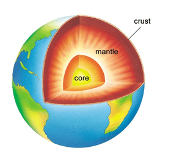

Planet earth has been called the "blue planet" due to the abundant water on its surface.(71% of earth is covered by water.)The third closest planet to the sun is the earth. The planet looks blue from outer space since two-thirds of the surface is covered with water, so it is called a blue planet.
Earth can be divided into three main layers.They are,
The core, the mantle and the crust. Each of these layers can be further divided into two parts: the inner and outer core, the upper and lower mantle and the continental and oceanic crust. Both the inner and outer core are made up of mostly iron and a little bit of nickel.
